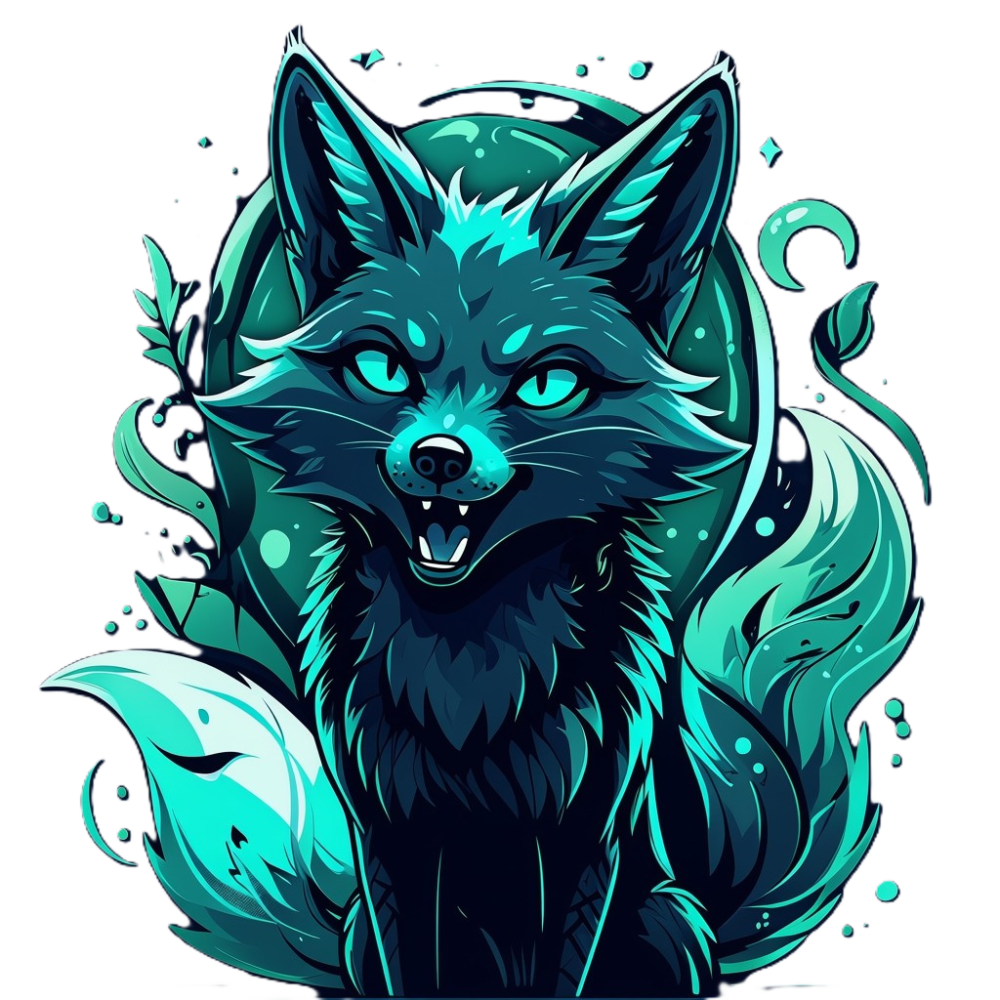
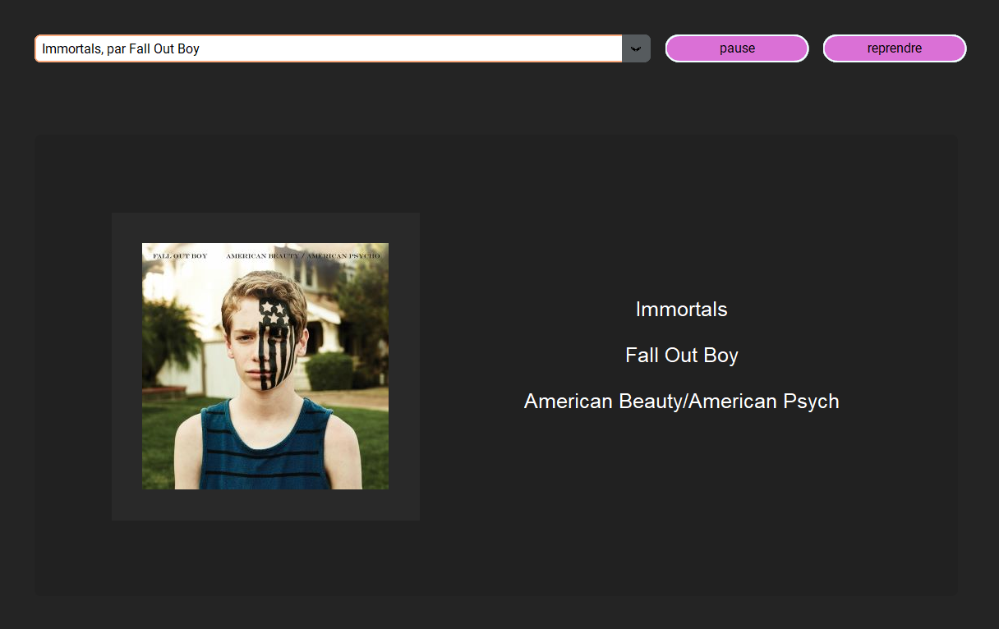

Curieuse de tout.
Absolument tout.
Créative et un peu décalée
Timide...
au début !
Et
ouais,
elle est
comme ça
Romane
Actuellement élève de Terminale,
J'ai réalisé ce site dans un seul but :
Vous faire découvrir mon parcours,
Mes compétences et mes centres d'intérêt,
Mais surtout, la personne que je suis.

Curieuse de tout.
Absolument tout.
Créative et un peu décalée
Timide...
au début !
Et
ouais,
elle est
comme ça
Romane
6°
CNED
3°
2nde
Option SI
1ère
Spé Maths
Spé NSI
Spé SI
BIA
~ Spé SI
Spé Physique niv. 1ère
Terminale
Maths Expertes
Spé Maths
Spé NSI
Projet de SI de première,
il s'agissait de penser puis de modeliser une lyre, ou projecteur motorisé, grâce à une imprimante 3D,
pour ensuite réaliser le circuit électrique et la programmation.
De plus, il fallait écrire un rapport conforme au monde professionnel, et faire une présentation du produit.
Durée = 12H
Effectif = 6 personnes
Status = Jamais terminé, pour cause de disfonctionnement de l'imprimante 3D
Comme à chaque projet de groupe, je me suis rendu compte de l'importance de la communication et des collègues de travail (à croire que je tombe toujours sur les pires -_-).
J'ai également apprit la difficulté de la mise en commun du travail de chacun ainsi que de la prévention des potentiels imprévus ou prérequis,
et enfin celle d'un rapport sérieux et détaillé et d'une présentation professionnelle.
Avec ce projet, j'ai consolidé mes connaissances en :
modélisation 3D via SolidWorks,
Aduino et C++ via Tinkercad,
rédaction LaTeX via Overleaf.
Je n'ai malheureusement pas pu récupérer le peu que nous avions imprimer pour continuer de travailler sur le projet,
mais l'idée d'en refaire un est déjà dans ma tête, et peut-être qu'un jour elle se concrétisera.

Premier projet de NSI en première, il s'agissait, à l'aide de la bibliothèque CustomTKinter, de faire une interface permettant de lire la musique et d'accéder à ses informations.
Durée = 6H + extras
Effectif = 4 personnes
Status = Terminé, en attente d'améliorations
Ce projet, que j'ai vraiment pris plaisir à faire, a été une découverte de CustomTKinter,
ainsi que du traitement des métadonnées des fichiers (ici mp4).
Pour le coup, ça a vraiment été un projet centré sur le python, et bien que peu développé ou optimisé car premier grand programme,
il a été très instructif sur différentes bibliothèques :
CustomTKinter,
eyed3,
pygame,
et os.
Second projet de NSI, il s'agissait de designer et programmer un site, avec système de like et de vues, sur lequel des vidéos seraient disponibles.
Durée = 12H + extras
Effectif = 4 personnes
Status = Terminé, en attente d'améliorations
Avec ce site, j'ai utilisé pour la première fois, avec une collègue, du JavaScript pour une barre de recherche,
et travaillé le traitement css, avec des transitions et une jolie mise en page (j'espère >_<).
J'ai appris l'importance des docstrings et de la communication avant et pendant la réunification des programmes et fonctions.
Et oui, comment ne pas parler de ce site... sur lequel vous naviguez !
Un projet personnel, depuis longtemps dans ma tête, mais qui a mis le temps pour voir le jour.
Encore aujourd'hui, des modifications et ajouts sont effectuées des manière très ponctuelle
Pour ce projet, la difficulté à été dans la façon de rassembler toutes les informations de manière à me ressembler,
tout en restant dans la limite du raisonnable '^^.
De plus, j'ai essayé d'utiliser tout ce que je savais afin de montrer mes compétences, mais j'ai finalement plus trouvé ce que je devais retravailler.
Mais ça a été tout aussi bénéfique, finalement.
A l'origine projet de NSI de Terminale consistant à prédire les déplacements possibles des pièces, il a été bien amélioré par moi ensuite.
En plus, réalisé en individuel pour raison de coéquipiaire indisponible, je le considère donc comme un projet personnel.
Durée = 6H + extras
Effectif = 2 personnes
Status = Terminé, en cours d'amélioration
Stages : Liber&Vous, E-artsup, SupInfo
Concours : Inovatech
travaux manuels de toutes sortes (dessin, peinture, etc... mais aussi bricolage, mécanique...)
lecture de tout, roman, BD, manga...
apprendre des trucs, peu importe le sujet (préférances quand même pour l'astrologie, les civilisations antiques et leur religion, l'archéologie... bref, la science en générale)
les jeux (vidéos, de carte, de plateau... je suis d'ailleurs très douée pour en comprendre et expliquer les règles)
I can un peu talk english, but it's not very bien. El mismo por el español, puedo hablar sin trop conjuguer los verbos.
Je maitrise, plus ou mien bien, différents languages informatiques comme le html, le css, le JavaScript, le C++, python...
J'ai également quelques base en rédaction LaTeX.
Je maitrise aussi des outils tels que SolidWorks ou Tinkercad.
Mon adresse e-mail : romadart1@gmail.com
Mon numéro de téléphone : 07 89 68 22 12
Ma localisation : Chinon, France
GitHub : https://github.com/romane-code
Je suis joignable pour toute question sur mon parcours et ma candidature
Cordialement
Romane FEAU